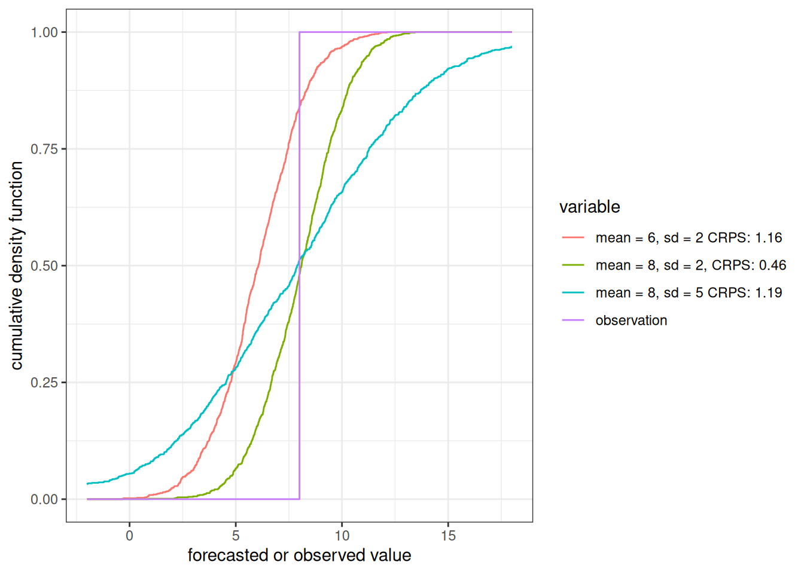

library(scoringRules)
library(tidyverse)11 Evaluating forecasts
The fourth forecast generation assignment will challenge you to analyze the automated forecasts that you submitted as part of Chapter 10. The assignment uses the module in Freya Olsson’s tutorial that provides code to access the automatically scored forecasts. You will add code to your repository that generates plots.
This chapter provides a description of metrics for evaluating forecasts, including the comparison to simple baseline forecast models.
11.1 Scoring metrics
A scoring metric is a value that can be used to evaluate how well a forecast compares to observations. Scores can then be compared among forecast models to evaluate relative performance. Typically, lower scores are better. Scoring metrics are also called “costs”.
11.2 Accuracy
The most basic score would be the difference between the forecast mean and the observation. However, there are a couple of issues with that score. First, forecasts below the observation will receive negative values and forecasts above will receive positive values, thus the lowest value is not the best. Second, it does not use any information from the forecast uncertainty in the evaluation. Metrics like absolute error (absolute value of the difference between the forecast mean and observation) and root-mean-squared error (RMSE) address the first issue but still do not consider the uncertainty.
11.3 Precision
Is the variance in the forecast larger than an acceptable value? For example, if the uncertainty in a rain forecast ranges from downpour to sunny then the variance is too large to be useful since one can not make a specific decision based on the forecast (e.g., do you cancel the soccer game ahead of time). One can also compare the variance in a forecast to a baseline variable from a simple model to see if the spread is less, and therefore a more informative forecast.
11.4 Accuracy + Precision
It is important to consider uncertainty because intuitively a forecast that has the correct mean but a large uncertainty (so it puts very little confidence on the observed value) should have a lower score than a forecast with a mean that is slightly off but with lower uncertainty (so it puts more confidence on the observed value). The Continuous Ranked Probability Score (CRPS) is one metric that evaluates the forecast distribution. Another is the ignorance score (also called the Good or the log score). The CRPS is described below.
11.4.1 Continuous Ranked Probability Score
Forecasts can scored using the continuous ranked probability score (CRPS), a proper scoring rule for evaluating forecasts presented as distributions or ensembles (Gneiting and Raftery (2007)). The CRPS compares the forecast probability distribution to that of the validation observation and assigns a score based on both the accuracy and precision of the forecast. We will use the ‘crps_sample’ function from the scoringRules package in R to calculate the CRPS for each forecast.
CRPS is a calculation for each forecast-observation pair (e.g., a single datetime from a reference_datetime). CRPS can then be aggregated across all sites and forecast horizons to understand the aggregate performance.
Importantly, we use the convention for CRPS where zero is the lowest and best possible score, therefore forecasts want to achieve the lowest score. CPRS can also be expressed as a negative number with zero as the highest and best possible score (Gneiting and Raftery (2007)). The scoringRules package we use follows the 0 or greater convention.
11.4.1.1 Example of a CRPS calculation from an ensemble forecast
This section aims to provide an intuition for the CRPS metric.
First, create a random sample from a probability distribution. This is the “forecast” for a particular point in time. For simplicity, we will use a normal distribution with a mean of 8 and a standard deviation of 1
forecast <- rnorm(1000, mean = 8, sd = 2.0)Second, we have our data point (i.e., the target) that we set to 8 as well.
observed <- 8Now calculate using the crps_sample() function in the scoringRules package
library(scoringRules)
crps_sample(y = observed, dat = forecast)[1] 0.481547211.4.1.2 Exploring the scoring surface
Now lets see how the CRPS changes as the mean and standard deviation of the forecasted distribution change
First, set vectors for the different mean and SD values we want to explore
forecast_mean <- seq(5, 11, 0.05)
forecast_sd <- seq(0.1,6, 0.05)Second, use the same value for observed as above (8)
Now calculate the CRPS at each combination of forest mean and SD. We used crps_norm because we know the forecast is normally distributed
combined <- array(NA, dim = c(length(forecast_mean), length(forecast_sd)))
for(i in 1:length(forecast_mean)){
for(j in 1:length(forecast_sd)){
combined[i, j] <- crps_norm(y = observed, mean = forecast_mean[i], forecast_sd[j])
}
}Finally, the contour surface highlights the trade-off between the mean and standard deviation. Each isocline is the same CRPS score. Holding the mean constant at the observed value but increases the uncertainty (increasing SD) results in a higher (worse) score (compare the green to orange dot). Holding the sd constant but adding bias results in a higher (worse) score (compare the green to red dot).
contour(x = forecast_mean, y = forecast_sd, z = as.matrix(combined),nlevels = 20, xlab = "Forecast mean", ylab = "forecast standard deviation", main = "CPRS score at different forecasted mean and sd\nThe observation is at 8")
points(x = observed, y = 2, col = "green")
points(x = 6, y = 2, col = "red")
points(x = observed, y = 5, col = "orange")11.4.1.3 Calculating CRPS manually
The manual calculation of CRPS helps provide intutition for what the metric represents.
First, we are going set the range of values (forecast or observation) that we are going to include in the calculation. In this case, we go 5 above and below the observed value. We will set dy to be 0.1 so we have values every 0.1.
dy <- 0.1
values_evaluated <- seq(observed - 5, observed + 5, dy)We are going to convert our forecast to a cumulative density function using the ecdf function and then calculate the value of the cdf at each value we are exploring.
forecast_cdf_function <- ecdf(forecast)
forecast_cdf <- forecast_cdf_function(values_evaluated)Next calculate the cdf for the observation where it is 0 if less than the observed value and 1 if above.
obs_cdf <- as.numeric((values_evaluated > observed))Plot the two cdfs on the same plot

At high level, CRPS is the area between the red and blue lines in the figure above. The area to the left of the observation is the error associated with the forecast saying the observed value will be less than the actual observation. The area to the right of the observation is the error associated with forecast saying that the observed value is larger than the observed value.
By substracting the observed cdf from the forecast cdf we can calculate the difference between the two curves (square it to get squared error).
error <- (forecast_cdf - obs_cdf)^2Multiply by the squared difference (height) by dy (width) to get the area of each error bin.
cdf_diff_area <- error * dyThe sum of the areas in each bin is the crps
crps <- sum(cdf_diff_area)
crps[1] 0.4814689which is very similar to answer from scoringRules package. The difference is due the size of dy. Smaller values of dy will yield values closer the calculation from scoringRules.
scoringRules::crps_sample(y = observed, dat = forecast)[1] 0.4815472You can compare differ forecasts using the cdf to see how the areas differ

11.5 Dynamics
Add discussion of shadow time and correlation.
11.6 Skill scores
It is a best practice in forecasting to compare forecasts generated by more complex models to thus generated by simple “naive” models so that we can understand whether the additional complexity provides any gain in forecast capacity. Two common naive models are persistence and “climatology”.
The skill score compared a forecast model to a baseline model using the following equation
skill_score <- 1 - (mean_metric_baseline - mean_metric_forecast)/mean_metric_baseline
The mean_metric_baseline is the mean score for the baseline model. It can be RMSE, MAE, CPRS, etc. The mean_metric_forecast is the same metric for the forecast that is being evaluated.
The skill score ranges from -Inf - 1 where values from -Inf to 0 are forecast models that perform worse than the baseline. Values from 0 to 1 are forecast models that improve on the baseline. A value of 1 means that the forecast model is perfect.
11.6.1 Example baseline models
Persistence forecasts that tomorrow will be the same as today, thus capturing the inertia of the system. Uncertainty is added to a persistence forecast by simulating it as a random walk where each ensemble member has a random trajectory without any direction (so the mean of the forecast is still previous days mean value). Persistence models perform well in systems with real-time observations because you actually know the current value and in systems with high inertia (like the water temperatures in the bottom of a large lake).
persistence <- arrow::open_dataset("s3://anonymous@bio230014-bucket01/challenges/forecasts/bundled-summaries/project_id=neon4cast/duration=P1D/variable=temperature/model_id=persistenceRW?endpoint_override=sdsc.osn.xsede.org") |>
filter(site_id == "BARC",
reference_date == as_date("2024-10-10")) |>
collect()persistence |>
ggplot(aes(x = datetime)) +
geom_ribbon(aes(ymin = quantile10, ymax = quantile90), color = "lightblue", fill = "lightblue", alpha = 0.7) +
geom_line(aes(y = median)) +
labs(y = "water temperature", x = "datetime", title = "NEON site: BARC") +
theme_bw()“Climatology” is the historical distribution of observations for the forecast days. In a seasonal system, we often represent this using the mean and standard deviation of historical data from the same day-of-year in the past. Less seasonal systems may represent it as the historical mean and standard deviation. I used climatology in quotes because the meteorological definition of climatology is 30 years but most ecological systems don’t have 30-years of observations. We use the term “day-of-year mean” instead of climatology when forecasting systems with limited historical data. Climatology forecasts the capacity of the long-term behavior of the system to capture seasonal patterns.
climatology <- arrow::open_dataset("s3://anonymous@bio230014-bucket01/challenges/forecasts/bundled-summaries/project_id=neon4cast/duration=P1D/variable=temperature/model_id=climatology?endpoint_override=sdsc.osn.xsede.org") |>
filter(site_id == "BARC",
reference_date == "2024-10-10") |>
collect()climatology |>
ggplot(aes(x = datetime)) +
geom_ribbon(aes(ymin = quantile10, ymax = quantile90), color = "lightblue", fill = "lightblue", alpha = 0.7) +
geom_line(aes(y = median)) +
labs(y = "water temperature", x = "datetime", title = "NEON site: BARC") +
theme_bw()Both of these models are simple to calculate and include no “knowledge” of the system that might be embedded in more complex models.
11.6.2 Example skill score calculation
This example compares the skill of the climatology forecast to the persistence baseline
baseline_models <- arrow::open_dataset("s3://anonymous@bio230014-bucket01/challenges/scores/bundled-parquet/project_id=neon4cast/duration=P1D/variable=temperature?endpoint_override=sdsc.osn.xsede.org") |>
filter(site_id == "BARC",
reference_datetime > lubridate::as_datetime("2024-09-01"),
reference_datetime < lubridate::as_datetime("2024-10-31"),
model_id %in% c("climatology", "persistenceRW")) |>
collect()
skill_score <- baseline_models |>
mutate(horizon = as.numeric(datetime - reference_datetime)) |>
summarize(mean_crps = mean(crps, na.rm = TRUE), .by = c("model_id", "horizon")) |>
pivot_wider(names_from = model_id, values_from = mean_crps) |>
mutate(skill_score = 1 - (climatology/persistenceRW))ggplot(skill_score, aes(x = horizon, y = skill_score)) +
geom_line() +
geom_hline(aes(yintercept = 0)) +
labs(x = "Horizon (days in future)", y = "Skill score") +
theme_bw() +
annotate("text", label = "climatology is better", x = 15, y = 0.2) +
annotate("text", label = "baseline (persistence) is better", x = 15, y = -0.2)Warning: Removed 1 row containing missing values or values outside the scale range
(`geom_line()`).11.7 Take homes
Different metrics evaluate different components of the forecast. Be sure to match your evaluation metric to evaluate the aspects of the forecast that match the needs of the forecast user.
11.8 Reading
Simonis, J. L., White, E. P., & Ernest, S. K. M. (2021). Evaluating probabilistic ecological forecasts. Ecology, 102(8). https://doi.org/10.1002/ecy.3431
11.9 Problem Set
If you have forecast submissions the scores from your submitted forecasts and the climatology and persistence forecasts. If you do not have submitted forecasts, use the model_id = XXXX to answer the questions
Create a new Rmarkdown document that you use to answer the questions below with a mix of code and text.
- Plot climatology, persistence, and your model for a single forecast day on the same plot
- Based on visual inspection of your plot, how do the medians model each forecast differ in capacity to represent the observations?
- Based on visual inspection of your plot, how does the uncertainty of each model forecast differ in capacity to represent the observations?
- Calculate the mean CRPS for the single-day forecast (averaged across all horizons). Which model has the lower score?
- Calculate the mean CRPS for climatology, persistence, and your model for all reference datetimes and horizons. Which model has the lower score when you consider all submissions?
- Do you think you have enough important from the mean CRPS score to determine the “best” model? If not, what is needed to better characterize the best-performing model?
Commit your qmd and render HTML to your GitHub repository that you used in Chapter 10.